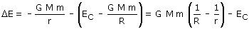
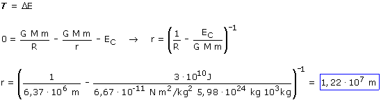
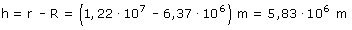

En este problema se analiza la puesta en órbita de un satélite siguiendo un trayecto ideal: una subida vertical hasta la altura que interesa para comunicarle a continuación la velocidad adecuada para que describa la órbita
a)
Cambios de energía mecánica desde que el satélite parte de la Tierra con energía cinética hasta que queda detenido a una cierta altura
 |

Durante la ascensión el satélite solo está sometido a la fuerza gravitatoria cuyo trabajo ya está contado en la variación de energía potencial, por tanto T =0
Aplicando el principio de conservación:

Pero no nos piden el radio de la órbita sino la altura de esta respecto a la Tierra, así que:
